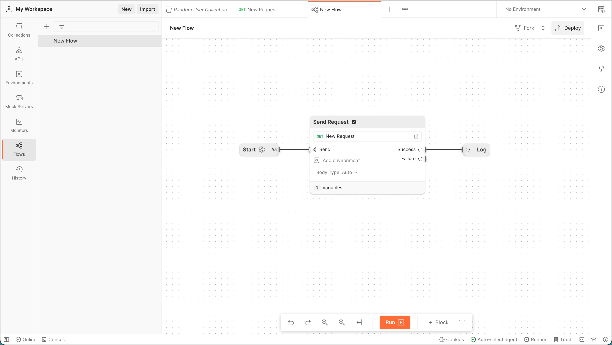

Postman Flows is a visual tool for building software for the API-First world. With Postman Flows, anyone can connect their web services' APIs to build workflows, integrations, and API applications in a visual and collaborative development environment.orkflows in your Postman workspace.
Prerequisites
- Familiarity with Postman
What You'll Learn
- how to build your first flow
- how to pass data between blocks
- how to run requests in sequence
- how to use authorization with Postman Flows
- how to use response data in a request
- how to use webhooks with Postman Flows
What You'll Need
What You'll Build
- A group of Postman collections and flows
This page shows you how to create flows with a quick start tutorial and a more detailed tutorial. The quick start tutorial shows you how to create a flow in Postman that checks if a website is down.
The more detailed tutorial starts with Creating a request and a collection. This tutorial creates a flow that gets a list of Pokémon, one page at a time, until it reaches the last page.
Quick start
This quick start tutorial creates a flow to check if a website is down or not. It does this by sending a request to the website and looking for a 200 status code in the response. If the website is up and running, the flow's Output block will display True. If the website is down, it will display False.
- Go to the DevOps Flows workspace and fork the DownDetector collection to your workspace. Then, in your workspace, select New > Flows and hide the sidebar.

- Right-click the canvas and select Send Request from the list of blocks. Connect the Send Request block to the Start block.

- In the Send Request block, select Add request > DownDetector > sitemap. Then select the port next to Success, and drag and drop it to the right. Select Evaluate from the list that appears to add an Evaluate block.

- In the Evaluate block, select
value1and change it tostatus. Then select Enter path..., scroll down, and select http.status.
- Select Start writing an FQL query... and enter
status=200.
- Drag and drop the port on the right side of the Evaluate block and add an Output block.
- Select Run. The Output block displays True, which means the website is up and running.
Creating a request and a collection
This is the beginning of a detailed tutorial that builds a flow that gets a list of Pokémon, one page at a time, until it reaches the last page. Start by creating a new collection and adding a GET request. You'll use this collection with the flow you'll create later.
- In your workspace, select New > Collection. Name the collection
Pokemon API. - Add a GET request with this URL:
https://pokeapi.co/api/v2/pokemon?limit=200.
- Select Send, then select Save Response > Save as example.
- Select the GET request and replace the URL
https://pokeapi.co/api/v2/pokemon?limit=200with the variable{{URL}}.
- Select Save.
Making your first send request in Postman Flows
- Select New > Flows. Your new flow appears with a Start block already in place.
- Right-click the canvas to the right of the Start block. From the list of blocks that opens, select Send Request.
- Connect the Start block to the Send Request block.

- In the Send Request block, select Add request and select
Pokemon API. Then select the GET request you created earlier.
- Create a String block below the Start block and enter the URL
https://pokeapi.co/api/v2/pokemon?limit=200. - Connect the String block to the port next to
{{URL}}on the Send Request block.
Logging the output to the console
- Create a Select block to the right of the Send Request block.
- Connect the Select block to the port next to Success on the Send Request block.

- In the Select block, select Enter path... and select
body.results. - Create a Log block and connect it to the right side of the Select block, then select Run.
- Select Console to view the results.

Checking for the next page of results
- Create another Select block and connect it to the Success port on the Send Request block.

- In the Select block you created, select Enter path... and select
body.nextto get the link to the next set of 200 results. - Create an If block to the right of the
body.nextSelect block. Connect thebody.nextSelect block to thekeyport. This creates a variable namedvalue1. - Also connect the
body.nextSelect block to theDataport in the If block.
- In the If block, select
value1and replace it withhas_next. This assigns thebody.nextvalue from the Select block to thehas_nextvariable in the If block.
- Select Write an FQL condition and enter ``has_next
!= null. - Connect the If block's TRUE port to the Send Request block's URL port. This passes the new
has_nextvalue to the existing URL variable in the Send Request block. - Also connect the If block's TRUE port to the Send Request block's Send port. This triggers the send event so it runs again.

Watching it run
After completing the above steps, select Run. The flow runs and logs all the Pokémon to the console.

Congratulations, you've created your first flow!
Postman Flows can get data with API requests or directly from the Start block. This tutorial shows examples of Postman Flows getting data using both methods and passing data between blocks.
Getting data and passing it between blocks
These examples get response data with API requests from existing collections in your workspace and from data pasted into the Start block. In these examples, the entire response is passed between blocks.
Getting data with an API request
In this example, the Send Request block gets data using a collection's GET request. The Send Request block then passes all the data to a Log block.
- Create a collection named
Random User Collectionand add a GET request with this URL:https://randomuser.me/api/. - Select Send.

- Select Save.
- Create a new flow and connect a Send Request block to the Start block.

- In the Send Request block, select Add request > Random User Collection > New Request. Each time the flow executes, it will get data using the GET request from the Random User Collection request you created earlier.

- Connect a Log block to the Send Request block's Success port. 
- Select Console then select Run. The Log block sends the entire response to the console, including request headers, response headers, and the response body.
Getting data from the Start block
In this example, the flow gets data from the Start block and passes it to an Evaluate block. The Evaluate block passes the entire response to the Log block in a variable.
- Create a new flow and select the gear icon in the Start block.

- Select Enter Incoming Data and paste in the sample data below. The flow will use this data every time it executes.
{ "results": [ { "gender": "female", "name": { "title": "Miss", "first": "Astrid", "last": "Klingenberg" }, "location": { "street": { "number": 2547, "name": "Lyseskrenten" }, "city": "Tvedestrand", "state": "Oppland", "country": "Norway", "postcode": "6523", "coordinates": { "latitude": "44.5909", "longitude": "130.7502" }, "timezone": { "offset": "+9:00", "description": "Tokyo, Seoul, Osaka, Sapporo, Yakutsk" } }, "email": "astrid.klingenberg@example.com", "login": { "uuid": "263e48e9-1d6d-4d18-9458-27b1b7bad1b9", "username": "lazycat514", "password": "francois", "salt": "YAY2fGhq", "md5": "0ed2300b7aad0843267d658db0f22f2a", "sha1": "57ef1b1c5cac06feb6712ac863b7c9d6292e400e", "sha256": "5312eee0d8693e522aa62814fb49fb3239bad5326ca0f37011a97704978a4add" }, "dob": { "date": "1984-03-11T08:50:14.752Z", "age": 38 }, "registered": { "date": "2003-09-27T19:45:20.432Z", "age": 19 }, "phone": "57680755", "cell": "96350131", "id": { "name": "FN", "value": "11038429851" }, "picture": { "large": "https://randomuser.me/api/portraits/women/68.jpg", "medium": "https://randomuser.me/api/portraits/med/women/68.jpg", "thumbnail": "https://randomuser.me/api/portraits/thumb/women/68.jpg" }, "nat": "NO" } ], "info": { "seed": "4be1e2e93f6d34ba", "results": 1, "page": 1, "version": "1.4" } } - Select the Language dropdown list and select JSON.

- Connect an Evaluate block to the Start block.
- In the Evaluate block, select key and enter
body. This assigns all the data received from the Start block to the variablebody.
- In the Evaluate block, select Enter FQL query and enter
body. This sends all the data in thebodyvariable to the Evaluate block's output. - Connect a Log block to the Evaluate block.

- Select Console then select Run. The flow gets the data from the Start block, routes it to the Evaluate block, and passes the entire response to the Log block, which displays the data in the console.
Passing specified data between blocks
You can extract specific values from response data in a number of ways using variables and Flows Query Language (FQL). The example below uses FQL in an Evaluate block to get the country field value from sample response data in the Start block.
- Create a new flow and select the gear icon in the Start block.

- Select Enter Incoming Data and paste in the sample data below. The flow will use this data every time it executes.
{ "results": [ { "gender": "female", "name": { "title": "Miss", "first": "Astrid", "last": "Klingenberg" }, "location": { "street": { "number": 2547, "name": "Lyseskrenten" }, "city": "Tvedestrand", "state": "Oppland", "country": "Norway", "postcode": "6523", "coordinates": { "latitude": "44.5909", "longitude": "130.7502" }, "timezone": { "offset": "+9:00", "description": "Tokyo, Seoul, Osaka, Sapporo, Yakutsk" } }, "email": "astrid.klingenberg@example.com", "login": { "uuid": "263e48e9-1d6d-4d18-9458-27b1b7bad1b9", "username": "lazycat514", "password": "francois", "salt": "YAY2fGhq", "md5": "0ed2300b7aad0843267d658db0f22f2a", "sha1": "57ef1b1c5cac06feb6712ac863b7c9d6292e400e", "sha256": "5312eee0d8693e522aa62814fb49fb3239bad5326ca0f37011a97704978a4add" }, "dob": { "date": "1984-03-11T08:50:14.752Z", "age": 38 }, "registered": { "date": "2003-09-27T19:45:20.432Z", "age": 19 }, "phone": "57680755", "cell": "96350131", "id": { "name": "FN", "value": "11038429851" }, "picture": { "large": "https://randomuser.me/api/portraits/women/68.jpg", "medium": "https://randomuser.me/api/portraits/med/women/68.jpg", "thumbnail": "https://randomuser.me/api/portraits/thumb/women/68.jpg" }, "nat": "NO" } ], "info": { "seed": "4be1e2e93f6d34ba", "results": 1, "page": 1, "version": "1.4" } } - Select the Language dropdown list and select JSON.
- Connect an Evaluate block to the Start block.
- In the Evaluate block, select key and enter
body. This assigns all the data received from the Start block to the variablebody. - In the Evaluate block, select Enter FQL query and enter
body.results.location.country. This navigates the response data with FQL and extracts the value for thecountryfield. - Connect a Log block to the Evaluate block.

- Select Console.
- Select Run. The Start block sends its data to the Evaluate block. The FQL in the Evaluate block gets the value of the
countryfield ("Norway") in the response data and sends it to the Log block."Norway"appears in the console.
If you have several requests that have no dependency on each other but have to be executed in a particular order, you can use send events to connect your blocks.
- Add a Send Request block: Select + Block on the toolbar and select the Send Request block from the list to add it to your canvas, then select the request. Repeat this until all the requests are added to the canvas.

- Connect the send events: Select the dot (success output) of the source block and connect it to the send input of the target block in the order you want the requests to execute.
 Here, a POST request is executed and once the request has completed, the PUT request endpoint is called, and then a GET request is called.
Here, a POST request is executed and once the request has completed, the PUT request endpoint is called, and then a GET request is called.
- Start the flow: Start the flow and see the requests run in the order they're configured:
 If you want to use data from one request in another request, you can learn how to do so in Chaining requests with data.
If you want to use data from one request in another request, you can learn how to do so in Chaining requests with data.
Most APIs require authorization to access their data. Postman Flows can include credentials in its API requests, explicitly or as variables. This tutorial creates a simple flow that uses a global variable to access the OpenAI API with a secret key.
Create a secret key for the API
This example flow uses a secret key to access the OpenAI API. To get your secret key:
- In your browser, go to
https://beta.openai.com/account/api-keysand select Sign up. - Follow the prompts to create and sign in to an OpenAI account.
- Return to
https://beta.openai.com/account/api-keysand create a secret key. - Copy and paste your secret key in a secure but accessible location. You'll use it in a later step.
Create a variable for the secret key
By assigning your secret key value to a variable, you can keep your key secure and easily include it in multiple Send Request blocks and flows.
- In your Postman workspace, select the environment quick look icon in the workbench.
- Next to Globals, select Edit (or Add).
- Add a variable named
authand pasteBearerin the INITIAL VALUE field. For example:Bearer ab-123456789876543212345678987654321 - Under TYPE, select secret from the dropdown list.

- Select Save.
- Close the Globals tab.
Create a collection and a request
- Create a collection named
OpenAI Collectionand add a GET request with this URL:https://api.openai.com/v1/models. - Select the Authorization tab.
- Next to Type, select API Key from the dropdown list.
- Select the Key field and enter
Authorization. - Select the Value field and enter
{{auth}}. - Select Send then Save Response > Save as example.

- Select the GET New Request tab and select Save.

Create a flow
- Create a new flow and connect a Send Request block to the Start block.
- In the Send Request block, select Add request > OpenAI Collection > New Request. The
{{auth}}variable appears at the bottom of the Send Request block.
- Connect a Log block to the Send Request block's Success port.
- Select Run then select Console. The flow gets your secret key from the
{{auth}}variable and includes it in the API request. The API accepts the secret key and sends the response with a200code, visible in the console.
This tutorial shows how to take data from a GET response and use it in a GET request in Postman Flows.
The Random User API returns a randomly chosen set of user data for each GET request, unless you include a seed as a query parameter. This tutorial takes the seed from a GET response and includes it as a query parameter in another GET request so that both GET requests return the same user's data.
Create a collection and a request
- Create a collection named
Random User Collectionand add a GET request namedFirst Request. - Enter this URL in the request:
https://randomuser.me/api/.
- Select Send then Save Response > Save as example.

- Select the GET First Request tab and select Save.
- Add another GET request named 1.
- Enter the same URL as the first request: 1.
- Select
Keyand enter seed. - Select
Valueand enter the variable{{seedVar}}.
- Select Save.
Create a flow
- Create a new flow and connect a Send Request block to the Start block.
- In the Send Request block, select Add request > Random User Collection > First Request.

- Connect a Select block to the Send Request block's Success port.
- In the Select block select Enter path... then /body/info/seed.

- Create another Send Request block but don't connect it yet.
- In the new Send Request block, select Add request > Random User Collection > Seeded Request. The
{{seedVar}}variable appears at the bottom of the block.
- Connect the Select block to the port next to
{{seedVar}}. - Connect a Log block to the second Send Request block's Success port.

- Select Run then select Console. Look at the two GET requests in the console and notice the second request includes a seed query. If you look at the response bodies for both GET requests, you'll see they describe the same random user.
 The first Send Request block gets a single random user's data and sends the response data to a Select block. The Select block selects the value of the seed field from the response data and passes that value to the next Send Request block. That Send Request block uses the first request's seed as a parameter, returning the same random user as the first Send Request block.
The first Send Request block gets a single random user's data and sends the response data to a Select block. The Select block selects the value of the seed field from the response data and passes that value to the next Send Request block. That Send Request block uses the first request's seed as a parameter, returning the same random user as the first Send Request block.
To create a flow that executes on the Postman servers, create a Start block.

Testing flows locally
Before starting, enter your test data and run it to see the output on your local console. Test data can be added by clicking the gear icon on the Start block. The test data can either be in text or JSON format.

Deploy your flow
Select Deploy and your flow will be running in the cloud. Selecting the Runs section of the right pane will display the deployed flow was last updated. The webhook URL can be seen here as well as in the top left corner of the flow.

Trigger the webhook
In the Runs section, select View to observe the flow running in the cloud. The logs will be visible in your client. Make a POST request to trigger the webhook endpoint and observe your flow executing in the cloud.

If you want to learn more about Postman Flows, review the official documentation for more details.
- Examples of flows: Brewing Postman Flows workspace
- Reference for blocks and data types: Postman Flows reference docs
- Flows Query Language (FQL) can be used to parse and transform JSON data to get the fields and structure you want: Introduction to FQL docs
- Livestream: AI Powered Sentiment Analysis with Postman Flows and ChatGPT
What we've covered
- how to build your first flow
- how to pass data between blocks
- how to run requests in sequence
- how to use authorization with Postman Flows
- how to use response data in a request
- how to use webhooks with Postman Flows